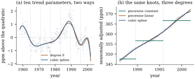
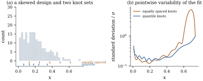

42.4 Regression splines and truncated power bases
A spline space is finite-dimensional, so fitting a spline is least squares with the columns of Eq. 42.3.1. Nothing new is needed to do it; what is needed is judgement about the two things the analyst now chooses, how many knots and where.
Given a degree
Being an ordinary linear model, it has
42.4.1. What the knots control
Fit a regression spline of degree
(a) (Number.) If
(b) (Rank.) If each piece
(c) (Placement.) For
(d) (Basis.) The columns of Eq. 42.3.1 are globally supported and increasingly parallel: beyond the last knot every one behaves like
Proof.
(a)
(b) Suppose
(c) For
(d) The first statement is Exercise (C2). The bound on the basis condition number is quoted from de Boor (2001) and not proved here; that it controls
Part (c) is demonstrated in Example (A skewed design) and part (d) in Example (Truncated powers against a local basis), whose nearly uniform design meets the proviso; the local basis is built in Chapter 43.
Part (b) has a sharp form. In the local basis the basis matrix has full rank if and only if each basis function’s support contains a design point — the Schoenberg–Whitney condition (Schoenberg and Whitney 1953), which is also the proviso in (d). Either way the rule is: no knot where there are no data, and no two knots with a nearly empty interval between them.
42.4.2. Six bases for one trend
Return to the
| Trend basis | Residual SS | GCV | |||
|---|---|---|---|---|---|
| quadratic | 7 | ||||
| degree 9 | 14 | ||||
| degree 16 | 21 | ||||
| piecewise constant | 11 | ||||
| piecewise linear | 12 | ||||
| cubic spline | 14 |
Read the middle rows against each other. At the same
In-sample, GCV prefers the degree-16 polynomial to
everything else (

import numpy as np
import statsmodels.api as sm
co2 = sm.datasets.co2.load_pandas().data["co2"]
monthly = co2.resample("MS").mean().dropna()
y = monthly.to_numpy()
t = (monthly.index.year + (monthly.index.month - 0.5) / 12).to_numpy()
n = len(y)
lo, hi = t.min(), t.max()
u = lambda s: 2 * (s - lo) / (hi - lo) - 1
K = 6
knots = np.quantile(t, np.arange(1, K + 1) / (K + 1)) # quantile knots
print("knots at", np.round(knots, 2))
def polynomial(s, d):
return np.vander(u(s), d + 1, increasing=True)
def step(s): # piecewise constant, d = 0
piece = np.digitize(s, knots)
return np.column_stack([(piece == k).astype(float) for k in range(K + 1)])
def broken_line(s): # continuous piecewise linear
return np.column_stack([np.ones_like(s), u(s)]
+ [np.clip(u(s) - u(k), 0.0, None) for k in knots])
def cubic_spline(s): # truncated power basis, d = 3
return np.column_stack([u(s) ** j for j in range(4)]
+ [np.clip(u(s) - u(k), 0.0, None) ** 3 for k in knots])
def with_season(f):
return lambda s: np.column_stack([f(s), np.cos(2 * np.pi * s), np.sin(2 * np.pi * s),
np.cos(4 * np.pi * s), np.sin(4 * np.pi * s)])
bases = {"quadratic": lambda s: polynomial(s, 2), "degree 9": lambda s: polynomial(s, 9),
"degree 16": lambda s: polynomial(s, 16), "piecewise constant": step,
"piecewise linear": broken_line, "cubic spline": cubic_spline}for name, f in bases.items():
X = with_season(f)(t)
p = np.linalg.matrix_rank(X)
beta, *_ = np.linalg.lstsq(X, y, rcond=None)
resid = y - X @ beta
rss = resid @ resid
lev = np.einsum("ij,ij->i", X @ np.linalg.pinv(X.T @ X), X)
print(f"{name:20s} p = {p:2d} RSS = {rss:8.2f} sigma = {np.sqrt(rss / (n - p)):.4f}"
f" GCV = {n * rss / (n - p) ** 2:.4f} max leverage {lev.max():.4f}"
f" cond = {np.linalg.cond(X):.1e}")Locality shows up in the same fits: moving the
December 2001 value by
42.4.3. Where to put them
Take
Quantile knots are a defensible default, not a universal optimum: they make the worst case tolerable. Where the regression function is known to vary fast in a sparse region the knots should follow the function — a choice made from outside the data, or paid for as a selection (Proposition 29.5.1).

import numpy as np
rng = np.random.default_rng(42)
n = 200
x = np.sort(rng.beta(1.5, 6.0, n)) # a skewed design on [0, 1]
K, d = 5, 3
equal = np.linspace(x.min(), x.max(), K + 2)[1:-1] # equally spaced knots
quantile = np.quantile(x, np.arange(1, K + 1) / (K + 1))
def spline_design(s, knots):
"""Truncated power basis for degree d with the given interior knots."""
return np.column_stack([s ** j for j in range(d + 1)]
+ [np.clip(s - k, 0.0, None) ** d for k in knots])
def counts(knots):
edges = np.r_[-np.inf, knots, np.inf]
return [int(((x >= a) & (x < b)).sum()) for a, b in zip(edges[:-1], edges[1:])]
print("equally spaced knots:", np.round(equal, 3), " points per interval", counts(equal))
print("quantile knots: ", np.round(quantile, 3), " points per interval", counts(quantile))grid = np.linspace(x.min(), x.max(), 500)
for name, knots in (("equally spaced", equal), ("quantile", quantile)):
X = spline_design(x, knots)
G = np.linalg.inv(X.T @ X)
Xg = spline_design(grid, knots)
sd = np.sqrt(np.einsum("ij,jk,ik->i", Xg, G, Xg)) # in units of sigma
print(f"{name:15s} knots: standard deviation of the fit at the median {np.interp(np.median(x), grid, sd):.3f},"
f" largest {sd.max():.3f} at x = {grid[sd.argmax()]:.3f}")Idea. Rules of thumb that survive scrutiny, for a fixed-knot regression spline:
- use a low degree, almost always cubic, and control
flexibility with
- place knots at quantiles unless something outside the data says otherwise, keeping several observations between consecutive knots;
- compare a few values of
- report the fit as a curve with a band, never as coefficients, which depend on the basis and mean nothing alone.
The middle two leave a discrete, data-dependent
choice. Chapter
43 removes it by taking
42.4.4. Why this basis is not the one to compute with
For the carbon dioxide design rescaled to
| 4 | 8 | 16 | 32 | |
|---|---|---|---|---|
| truncated powers | ||||
| local basis |
The truncated power condition number multiplies by
about fifteen for every doubling of
The remedy is that of Section 42.2:
the space is fine and the basis is bad. The local basis
is built in Chapter 43 (Definition 43.2.1 and Proposition 43.2.1). The
truncated power basis keeps its place in the theory — Theorem 42.3.1
is easiest to prove with it, and
42.4.5. Honest limits of a fitted curve
Three warnings close the chapter, none of them about
arithmetic. Outside the range there is nothing:
a cubic spline continues as a cubic beyond its last
knot, and refitting to the months up to 1990 and
predicting 1991–2001 gives root mean squared errors of
A curve is a conditional mean, not a mechanism: dropping linearity removes a functional-form assumption and nothing else, and Theorem 25.4.1 is still what licenses a causal reading. And a flexible fit is no substitute for a good parameterization: where the relationship is known to be a power law, the transformations of Chapter 22 give a two-parameter model that a ten-parameter spline can only approximate and that extrapolates on a principle (Theorem 22.3.2). A spline is often best used diagnostically: fit it, look at the shape, then ask whether a parametric form with meaning would do.
42.4.6. Exercises
A. Check your understanding
A cubic regression spline with
Three analysts fit a cubic spline with the same six knots, in the truncated power basis, in the local basis, and as free cubics under the continuity constraints. Which outputs agree exactly, which to rounding, and which disagree?
B. Practice
Fit cubic splines to the carbon dioxide series with
Solution. The two have the same
minimizer here or nearly so; GCV replaces each
Compute the pointwise
Solution. The ratio of half-widths
is
A model has a cubic spline in
Solution. This is Theorem 6.6.2 with
C. Going deeper
For a regression spline the fitted value at
Suppose